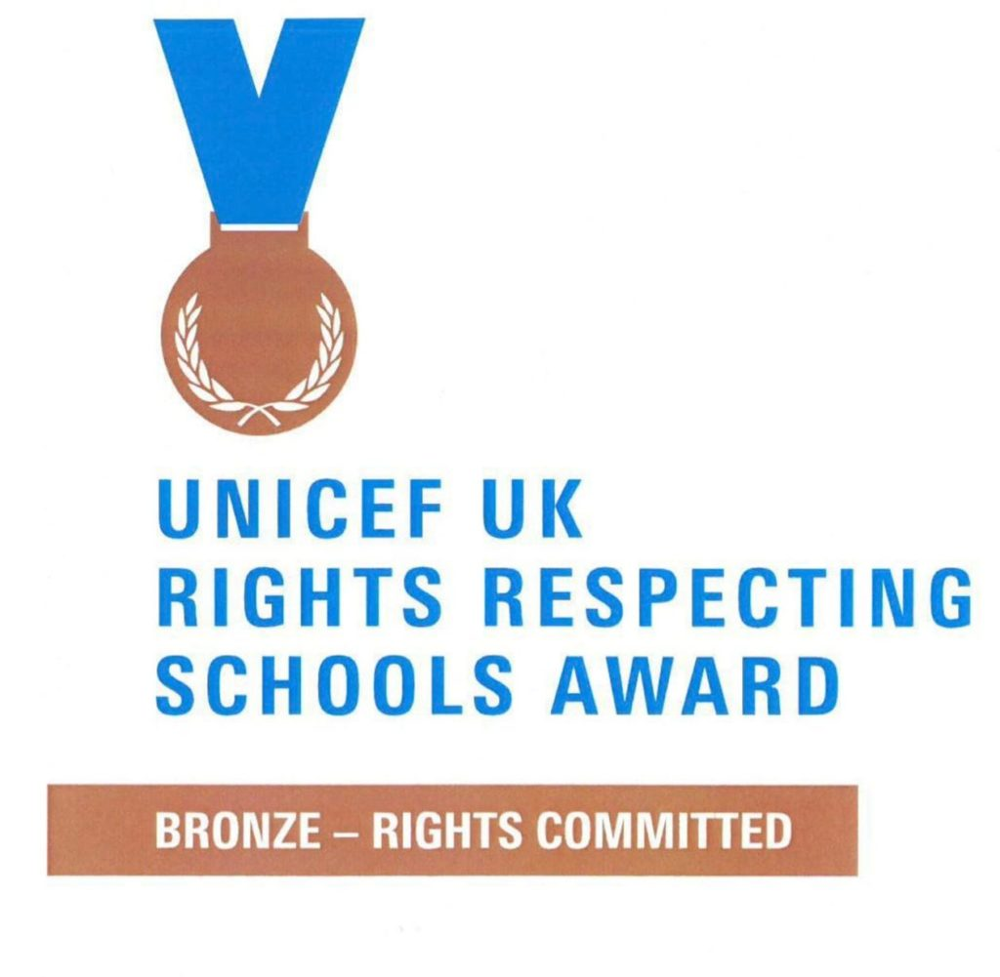
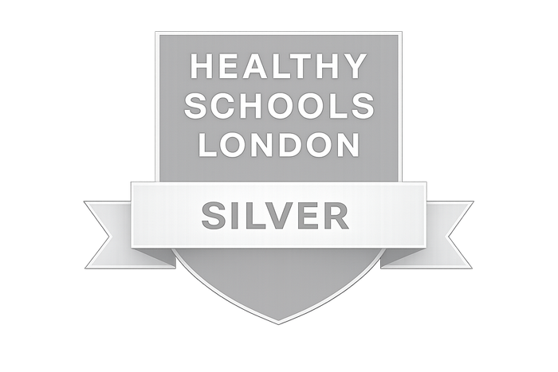
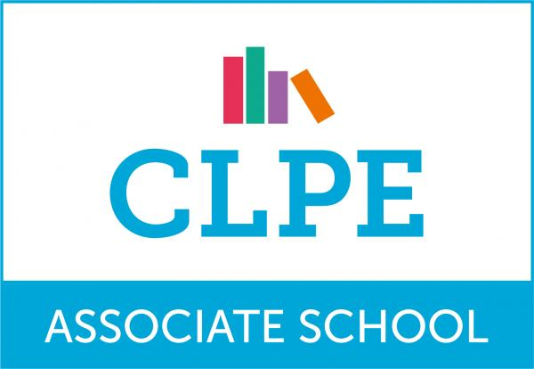
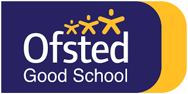

What will I learn?
An ambitious, connected curriculum that builds knowledge and brings learning to life.

Discover King's Cross Academy
A values-led nursery and primary school where children are known, nurtured and challenged — in the heart of one of London's most exciting communities.
Growing up at KCA
A child may arrive with us at three and leave at eleven. In those years, we want them to acquire powerful knowledge, discover their strengths, find their voice and develop the confidence and character to thrive at secondary school and beyond.
An ambitious, connected curriculum that builds knowledge and brings learning to life.
A deliberately planned personal development journey, shaped by six values from Nursery to Year 6.
Strong foundations, high expectations and outcomes that show the impact of learning over time.

What will your child learn?
Our approach to learning is distinctive, challenging and rigorous. We want every child to develop the knowledge, understanding, skills and attitudes needed for high-quality learning.
Learning is shaped around Big Questions that give children a meaningful purpose for their learning. These questions invite curiosity, encourage children to think deeply and bring learning across different subjects into conversation. Rather than simply collecting facts, children learn to make connections, consider different perspectives and use what they know to develop increasingly thoughtful answers.
Children explore significant people, events, ideas and issues; ask questions; consider evidence; listen to others and develop informed viewpoints.
“Why is it so important to know where our food comes from?”Year 1
“How has London's past shaped the city we know today?”Year 3
“How can I prepare for my future?”Year 6
Each project begins with an initial experience designed to spark curiosity and culminates in a learning presentation, giving children an authentic audience and purpose for what they have learned.
Explore our complete curriculum →More than a postcode
Our location changes what is possible. Children grow up alongside world-leading arts, science, technology and community organisations. Partnerships with Frank Barnes School for Deaf Children, Central Saint Martins, the Francis Crick Institute, Google UK and others broaden horizons, enrich learning and raise aspirations.
See where a KCA childhood can take you.
From local visits to major performances, every phase brings new opportunities to explore, create, perform, lead and belong.
Arts Week culminates in a gallery exhibition where children share ambitious creative work with families and the wider community. Year 3 and Year 6 learning also builds towards exhibition and presentation opportunities here.
KCA is a Google Reference School, recognising our use of technology to support ambitious teaching, learning and digital confidence.
Sharing our campus with Frank Barnes School for Deaf Children creates a distinctive inclusive community. KCA pupils learn British Sign Language from Nursery to Year 3 and children learn and play alongside one another.
Children enjoy a special Christmas theatre production as part of their early cultural experiences at KCA.
Children have the opportunity to see a duckling hatch and grow in school, bringing learning about life and change vividly to life.
Bright Futures Academy forms part of the rich programme of opportunities available across the KCA journey.
Children have the opportunity to see a West End musical, experiencing world-class theatre as part of their time at KCA.
Children make connections between food, farming and where the things we eat come from.
A local visit helps children explore community, identity and the places that shape their neighbourhood.
Children explore the natural world beyond school, connecting observation and curiosity with care for the environment.
Children explore the neighbourhood around KCA, building confidence, curiosity and a growing sense of place.
A visit to one of London's best-known landmarks supports children's study of the city, its people and its history.
Children encounter marine life first-hand as science knowledge becomes a memorable real-world experience.
Children explore living things, habitats and the relationship between communities and the natural world.
Kew supports learning about plants, environments and rainforests through direct observation and exploration.
Children explore London from above as they investigate how the city's past has shaped the place they know today.
Children develop mapping skills and explore how journeys help us understand the world and each other.
A museum visit supports children's understanding of the Stone Age and how people lived in the past.
Children investigate their Big Question about how water brings people together through a local canal and water study.
Children investigate habitats and climate as they consider how people and living things adapt to different environments.
The Thames Barrier becomes part of children's investigation into water, rivers and how communities respond to their environment.
Ancient Egypt is brought to life through artefacts and collections before children share their learning with an authentic audience.
Children experience a tropical environment in London while exploring why the world's rainforests matter and why they should be protected.
Children explore Camden's development and the stories of people who have built new lives here.
Children taste crops grown in Kenya, turning their exploration of food and farming into a sensory experience.
Children invent and junk-model a new piece of playground equipment, combining imagination, problem solving and making.
Food becomes a way to encounter another culture, with tasting feeding into practical food technology and wider learning.
Children step into the past through Victorian writing, portrait-miniature making and cooking.
An immersive day gives children a memorable starting point for exploring life in the Stone Age.
Children immerse themselves in Ancient Egypt before sharing their learning through exhibition and presentation.
Ancient Greece is brought to life through an immersive curriculum day linked to children's historical learning.
Children encounter Roman history through a dedicated experience before presenting what they have discovered.
Children create volcanoes as a memorable launch into their exploration of volcanoes, earthquakes and natural disasters.
An in-school planetarium experience brings Earth and space learning dramatically to life.
A dedicated Tudor experience gives pupils an immersive route into the people, events and stories of the period.
Fully funded teaching and examinations develop voice, interpretation and confident public performance through nationally recognised qualifications.
Every pupil receives fully funded instrumental tuition, developing musical knowledge, disciplined practice and confidence to perform.
Children progressively build water confidence, technique and essential safety knowledge across their time at KCA.
Children meet professionals, take part in practical workshops and discover how today's learning connects with tomorrow's possibilities.
A week of visual art, music, drama and dance culminates in a public exhibition at Central Saint Martins.
Pupils perform at Coal Drops Yard, sharing music with families, visitors and the wider King's Cross community.
Our youngest children take to the stage, developing speaking, singing, teamwork and confidence.
Our oldest pupils travel to France for an immersive residential that develops independence, resilience and cultural understanding — and creates lifelong memories.
Pupils apply and interview for meaningful roles across school, building leadership, organisation and professional confidence.
Every pupil contributes to a full-scale musical production, bringing together confidence, teamwork and creativity.
World War I Day and an immersive evacuation experience help children explore history through purposeful, memorable learning.
Children connect their learning about the Windrush generation with London's living cultural history.
Who will your child become?
Our six values are not decoration. They shape our curriculum, relationships and expectations — giving children a shared language for the person they are becoming.


A journey, not a checklist
From Nursery to Year 6, experiences, responsibilities and opportunities are deliberately sequenced. Children learn what the values mean, recognise them in action and increasingly demonstrate them independently in school and beyond.

What will they experience?
Performance, music, BSL, art, sport, play, leadership, visits, residentials and partnerships are not add-ons. They are part of how children learn, develop character and discover what they can do.
Sharing our building with Frank Barnes School for Deaf Children creates a particularly special community, including opportunities for KCA pupils to learn British Sign Language.
More than the school day
We want every child to discover something they love. Our co-curricular programme gives children opportunities to explore new interests, develop talents, build confidence and have fun — while our wraparound provision helps the school day work for families.
Our programme runs across the week and includes sport, arts and culture, languages, STEM, wellbeing, cooking, coding, chess and much more. The current Autumn programme is for Years 1–6.
High-quality wraparound care is available through The Play Professionals to all children from the moment they start with us — including Nursery and Reception children.
We work deliberately to remove barriers to participation. Pupil Premium families pay just 10% of the cost of one club each term, with KCA funding the remaining 90%.
How do we know it’s working?
At King’s Cross Academy, high expectations and inclusion go hand in hand. Our outcomes are one way we see the impact of that ambition — from the strong foundations children build at the beginning of their school journey to the results they achieve as they prepare for secondary school.
Our Early Years outcomes are above the national average, showing that children leave Reception with strong foundations for the next stage of their learning.
In 2026, our Key Stage 2 pupils achieved above the national average across all expected-standard measures, with the proportion achieving the combined expected standard 10 percentage points above national.
We also look carefully at outcomes over time, the achievement of different groups and the progress children make from their individual starting points. Our ambition is simple: every child achieving as strongly as possible.
Explore our Performance & OutcomesAlways moving forward
We are ambitious about what KCA can become as well as proud of what it is today. Hear from our Headteacher about our current school improvement priorities.
Ready for what comes next
Our ambition extends beyond Year 6. We want every child to leave KCA academically prepared, personally confident and excited about the next stage of their education. We support families to find the secondary school that best matches their child’s strengths, interests and aspirations.
Where our pupils go next
Don't just take our word for it
Families, pupils and external reviewers all see different parts of school life. Together, their voices help tell the story of King's Cross Academy.
“This is a welcoming, warm and caring school. Pupils are safe and happy.”
Ofsted recognised that pupils achieve well, leaders are ambitious for all pupils and the school supports pupils’ wider development very well.
“There was a togetherness of not only the staff team but the children.”
The assessor highlighted the inclusive culture pupils and staff create together.
“Every child leaves the school with a hobby or a passion stemming from an experience they have had at school.”
The review celebrated KCA’s extensive wider opportunities and personal development offer.
“I think the school is excellent at making kids feel included, safe and that their opinions and voice matter.”
92% of parents said they would recommend KCA to another parent.
“KCA is the best school in the world, I wish I could stay here for secondary school.”
“My teachers are really helpful and make learning fun.”
“Everyone at the school is really kind and it's fun to come here.”
“We get to do lots of fun things that I didn't get to do at my previous school.”
“My favourite part about KCA is the teachers because they are all really nice to us and help us with our learning.”
Recognition & accreditation





Every child belongs
KCA is a highly diverse school community. We follow a Learning without Limits philosophy: ability is not fixed, barriers should be overcome and every child should participate and achieve in school life.
Our motto, Love Learning Together, reflects a simple belief: children flourish when pupils, families, staff and the wider community work in partnership.

Nursery → Year 6 → beyond
The best way to understand King's Cross Academy is to experience it. Come and meet our children, see learning in action and discover our community for yourself.
A few things you might be wondering
We welcome applications to our Nursery, Reception and all year groups from Year 1 to Year 6. The application process differs depending on the year group you are applying for, and our Admissions pages will guide you through each route. If you are considering KCA, we would always encourage you to visit us first and experience the Academy for yourself.
Explore admissionsAbsolutely. We run regular school tours for families considering Nursery, Reception and in-year places. You’ll have the opportunity to see learning in action, explore our building and learning spaces, meet members of our team and ask questions about life at KCA. Children are very welcome to come along too.
Book a school tourOur gates open at 8:45am, giving children time to arrive and settle before all children start school at 9:00am. Our Early Years children finish at 3:10pm, while other year groups finish between 3:20pm and 3:30pm. Nursery has its own session arrangements, with full details available on our website.
Yes. High-quality wraparound care is provided through The Play Professionals and is available to all children from the moment they start with us — including Nursery and Reception children. This provides families with flexible care beyond the school day in a familiar, welcoming environment where children can play, socialise and enjoy a range of activities.
There is always something happening at KCA. Our co-curricular programme includes opportunities across sport, performance, creativity, languages, STEM, wellbeing and much more. The programme changes throughout the year so children can discover new interests and develop their talents. Reception children begin co-curricular clubs after the Autumn Term, once they have had time to settle into school life.
For families eligible for Pupil Premium, KCA funds 90% of the cost of one club each term, helping ensure opportunity is genuinely accessible.
Explore the co-curriculumInclusion is central to who we are. We want every child to participate fully in the academic, social and wider life of KCA, and we adapt teaching, environments and provision to respond to individual needs.
We work closely with children and families to understand individual strengths and needs, ensuring appropriate support is in place while maintaining high expectations for every learner. Our commitment to inclusion has been recognised through the Inclusion Quality Mark Centre of Excellence Award.
Explore SEND & inclusionOur uniform helps children feel part of the KCA community and is designed to be smart, practical and suitable for an active school day. Full information about our uniform, PE kit, footwear and where items can be purchased is available on our website.
View our uniformWe want children to develop healthy habits alongside a healthy relationship with food. Pupils can enjoy nutritious school meals each day, with vegetarian options available, and we work with families where children have specific dietary requirements or allergies.
Our wider commitment to children’s health and wellbeing has been recognised through our Healthy Schools London Silver Award.
Find out about food at KCAFamilies are important partners in children’s learning. We keep parents informed about their child’s progress through regular communication, parent meetings and reporting, while sharing what children are learning and experiencing throughout the year.
Just as importantly, we want communication to work both ways. We encourage families to talk to us, ask questions and be active partners in their child’s education.
We think it is the combination: an ambitious curriculum shaped by big questions; extraordinary experiences made possible by our King’s Cross location and partnerships; a carefully planned Personal Development Curriculum rooted in our six values; a genuinely inclusive community where children are known and valued; and high expectations for what every child can achieve.
Our motto captures it simply: Love Learning Together.